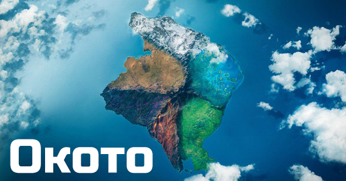
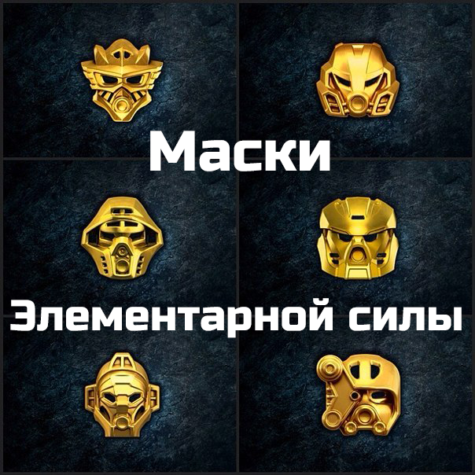
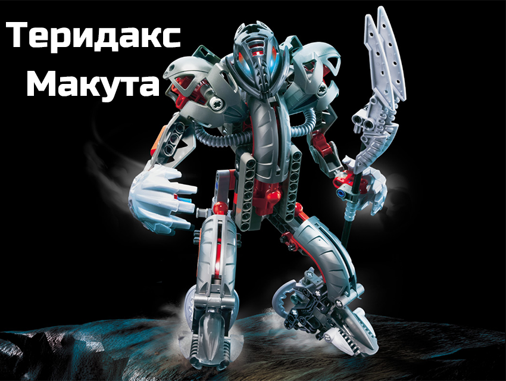
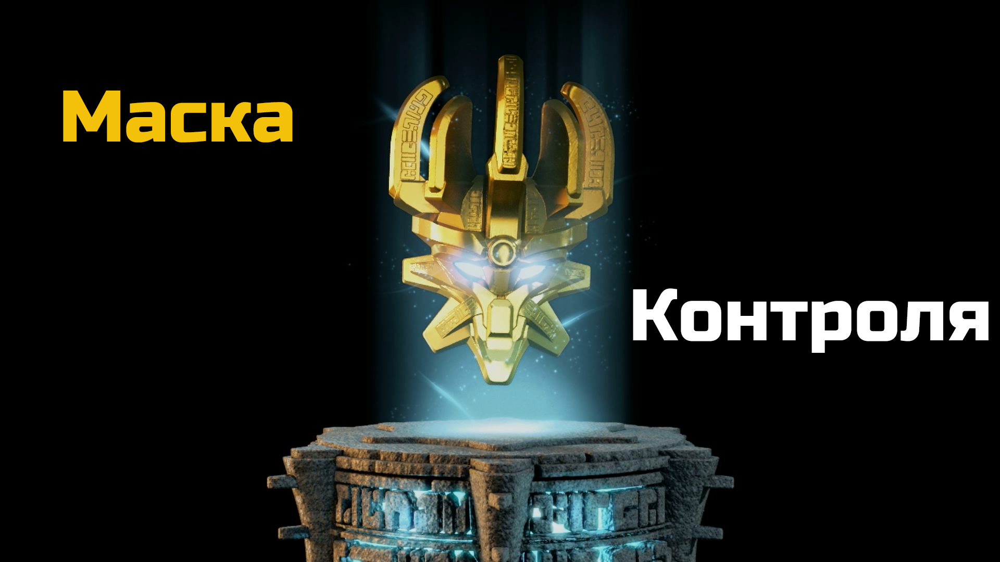

Маска Контроля
Очень давно Создатель Масок Экиму жил на острове Окото вместе со своим братом Макутой.
Они ковали Маски Элементарной Силы для жителей этого острова, на котором царили спокойствие и гармония.
Но однажды этот хрупкий баланс был нарушен – Макута, охваченный завистью к Маскам Экиму, которые пользовались большей популярностью у аборигенов, решил нарушить Священное правило Создателей Масок.
Он выковал Маску Абсолютного Контроля. В ней Макута соединил Силу всех шести Стихий, и она стала самой могущественной Маской на острове. Так и появилась Маска Контроля.
Данный сайт является личным проектом и не преследует коммерческих целей. Он не спонсируется компанией LEGO и не связан с ней никаким образом. Официальный сайт компании Lego находится по адресу www.lego.com. LEGO®, BIONICLE® - это зарегистрированные торговые марки The LEGO Company. Копирование материалов с BionicleRu разрешено, ©2017 BionicleRu - Русскоязычный сайт о Биониклах. Если у вас есть предложения или вопросы, свяжитесь с администратором.